Pengetahuan Haji&Umroh
Wukuf di Arafah: Berdiam diri di padang Arafah pada tanggal 9 Dzulhijjah. (Ini adalah inti dari ibadah haji).
Haji dan umroh adalah dua ibadah mulia dalam agama Islam yang dilakukan dengan cara berkunjung ke Tanah Suci Makkah (Baitullah)
Haji dan umroh adalah dua ibadah mulia dalam agama Islam yang dilakukan dengan cara berkunjung ke Tanah Suci Makkah (Baitullah).
Meskipun keduanya memiliki kemiripan dalam beberapa prosesi ritual, haji dan umroh memiliki perbedaan mendasar dari segi hukum, waktu pelaksanaan, rukun, serta tempat ibadahnya.

Haji: Secara bahasa berarti menyengaja atau menuju suatu tempat. Menurut istilah syariat, haji adalah sengaja mengunjungi Ka'bah untuk melakukan ibadah pada waktu dan dengan syarat tertentu.

Hukum haji adalah wajib (fardhu ain) sekali seumur hidup bagi setiap Muslim yang memenuhi syarat mampu (istitha'ah), baik secara fisik, mental, maupun finansial. Haji merupakan Rukun Islam yang kelima.

Umroh: Secara bahasa berarti berkunjung. Menurut istilah syariat, umroh adalah berziarah ke Baitullah untuk mendekatkan diri kepada Allah dengan melaksanakan ritual tertentu.
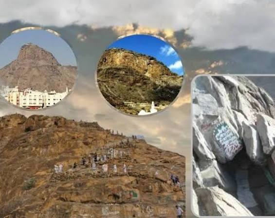
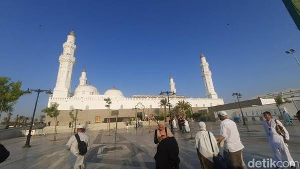
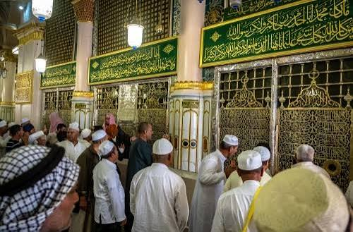
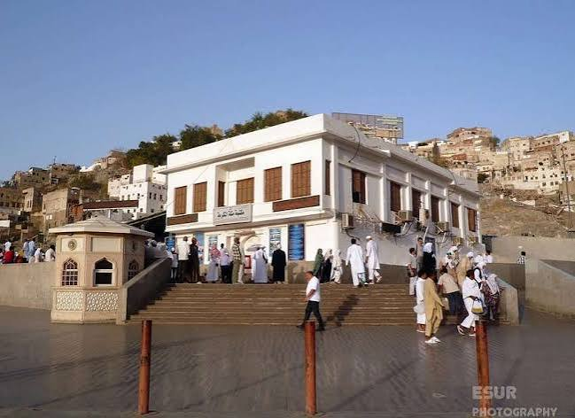
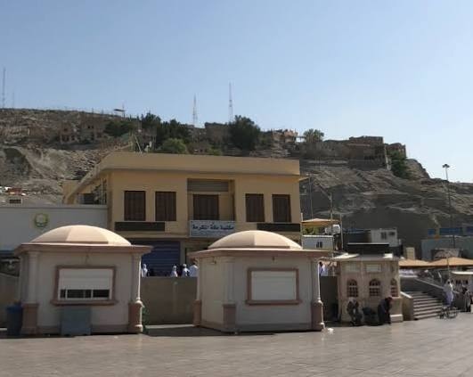
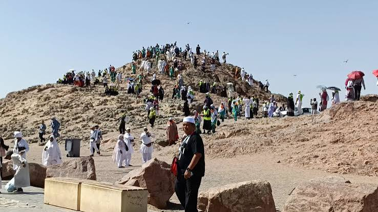
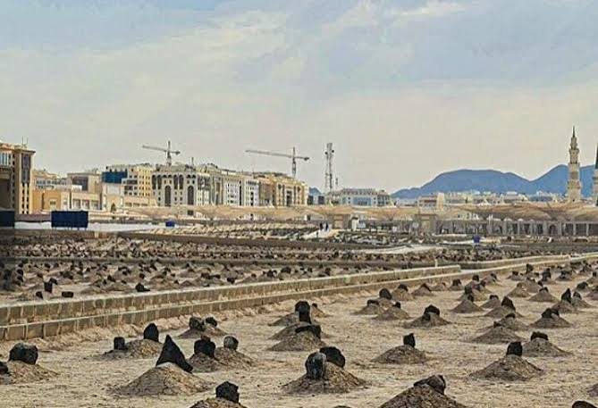
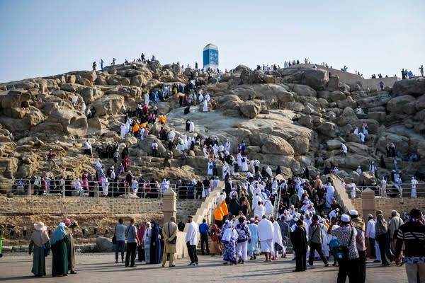
Haji dan Umroh ke MAKKAH MADINAH
Rukun adalah keabsahan ibadah yang tidak boleh ditinggalkan. Jika salah satu rukun terlewat, maka ibadah tersebut tidak sah dan tidak bisa diganti dengan denda (dam)..
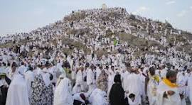
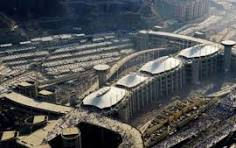
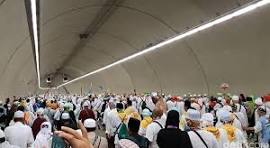
Ihram: Berniat untuk memulai ibadah haji dengan memakai pakaian ihram dari titik miqat.
Wukuf di Arafah: Berdiam diri di padang Arafah pada tanggal 9 Dzulhijjah. (Ini adalah inti dari ibadah haji).
Thawaf Ifadhah: Mengelilingi Ka'bah sebanyak 7 kali.